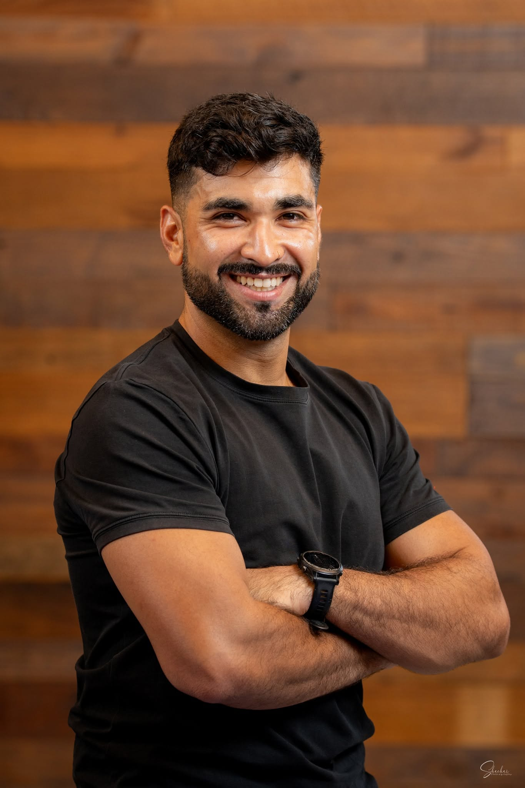
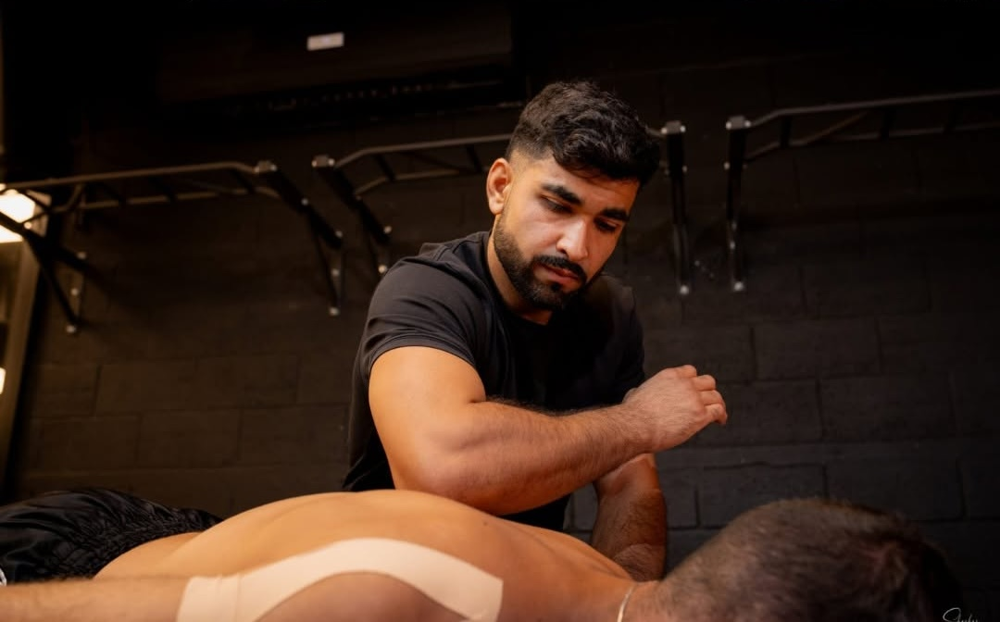
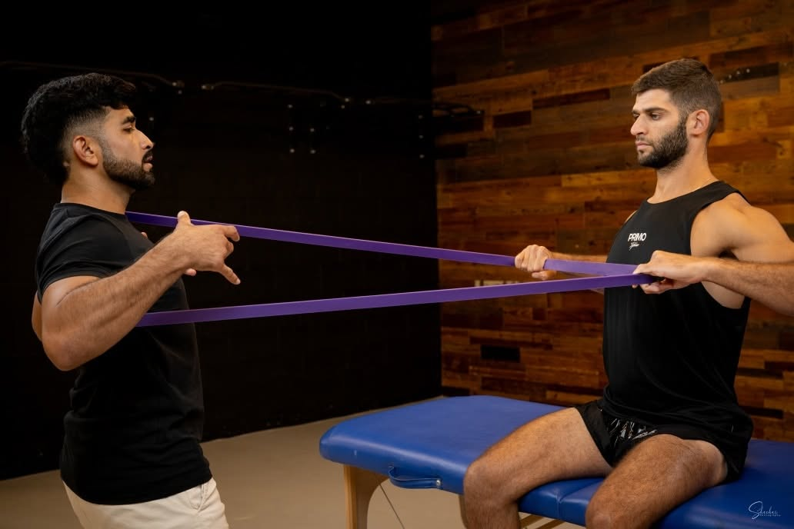

שיקום מקצועי
אחרי פציעות ספורט, ניתוחים, כאבים כרוניים — או פשוט רצון לחזור לתפקוד מלא.
TheraFist הוא השילוב בין פיזיותרפיה מקצועית לבין תנועה מעולם אומנויות הלחימה. לא טיפול פסיבי בלבד — אלא שיקום אקטיבי, מדויק ומותאם אישית, שמחזיר לגוף ביטחון, שליטה ותנועה.
הרבה שואלים אותי — ״אביחי, זה אימון אגרוף תאילנדי או פיזיותרפיה?״ התשובה היא: זה השילוב שחיכיתם לו. השירות הוא קודם כל פיזיותרפיה מקצועית ומותאמת אישית — אבל הדרך נראית אחרת לגמרי.
אחרי פציעות ספורט, ניתוחים, כאבים כרוניים — או פשוט רצון לחזור לתפקוד מלא.
שילוב אלמנטים מעולם האיגרוף התאילנדי ככלי שיקומי עוצמתי — תנועה, קצב ועוצמה.
עבודה על יציבות, שיווי משקל, קואורדינציה, שליטה וביטחון בגוף.
הכול בקצב של המטופל, במרחב בטוח ומקצועי, בליווי פיזיותרפיסט מוסמך.
זה לא ספא. זה שיקום אקטיבי, משמעותי ומקצועי — שלא מוותר עליכם.

פיזיותרפיסט מוסמך B.P.T, בוגר אוניברסיטת אריאל ופיזיותרפיסט בבית החולים בילינסון. לוחם מילואים, מאמן אגרוף תאילנדי וקראטה — ומפתח שיטת TheraFist. אני מטפל בפצועי מלחמה ומשלב שיקום פיזי, תנועה, כוח וחוסן מנטלי — כי ראיתי מקרוב שהחלמה אמיתית חייבת לגעת גם בגוף וגם בנפש.
כל טיפול נבנה אישית — לפי המצב, המטרות והקצב שלך.
אבחון וטיפול מותאם אישית לכאבים, מגבלות תנועה ושיפור תפקוד יומיומי.
שיפור תפקוד נשימתי, ניקוז הפרשות והגברת סיבולת — בבית ובקהילה.
ליווי מקצועי אחרי ניתוחי ברך, ירך, כתף ועמוד שדרה — עד חזרה לתפקוד מלא.
חזרה בטוחה ומדורגת לפעילות ספורטיבית — עם דגש על מניעת פציעה חוזרת.
חיזוק, שיווי משקל וביטחון בתנועה — לשמירה על עצמאות ואיכות חיים.
טיפולי פיזיותרפיה עד הבית — בפתח תקווה והסביבה, כולל התאמת אביזרי עזר.
אימונים אישיים למתחילים ומתקדמים — טכניקה, כושר קרבי וביטחון עצמי.
משמעת, דיוק ושליטה — ערכי הקראטה ככלי לחיזוק הגוף והנפש.
עקרונות תנועה מאומנויות לחימה ככלי שיקומי — כוח, קואורדינציה וחוסן מנטלי.



״אחרי הפציעה חשבתי שלא אחזור להתאמן. אביחי החזיר לי לא רק את הרגל — הוא החזיר לי את הביטחון. כל טיפול הרגיש כמו אימון עם מטרה.״
״הגעתי אחרי ניתוח ברך עם המון פחד מתנועה. העבודה עם אביחי הייתה מדויקת, סבלנית ובקצב שלי — וחזרתי לרוץ.״
״אבא שלי בן 82 קיבל ממנו טיפול בבית. מעבר למקצועיות — היחס, הסבלנות והחיוך עשו את כל ההבדל. הוא שוב הולך בביטחון.״
שיחת היכרות קצרה, בלי התחייבות — נבין יחד מה המצב, מה המטרה, ואיך מגיעים אליה.
השאירו פרטים או פנו ישירות — אני עונה אישית לכל פנייה.